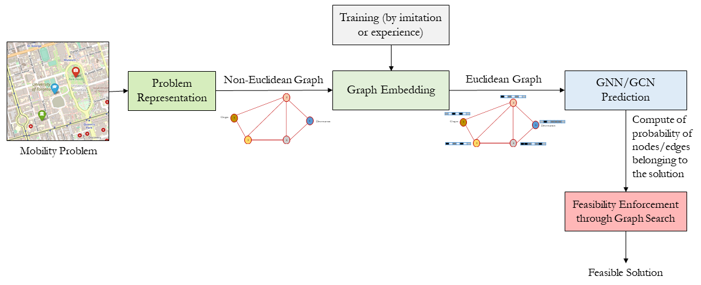

Learn to Search#
Machine learning (ML) is a subfield of AI that endows an artificial system/process with the ability to learn from experience and from observation without being explicitly programmed. ML algorithms are traditionally categorized into supervised, unsupervised, and reinforcement learning algorithms. First, supervised learning uses inductive inference to approximate mapping functions between data and labels/classes. This mapping is learned using already labeled training data. Second, unsupervised learning deals with unlabeled data through techniques like clustering and data association. The third category of ML algorithms is reinforcement learning (RL), which is a weakly supervised learning technique that learns from interactions through a feedback loop or by trial and error. RL learns what to do (i.e., how to map a situation to actions) to maximize a numerical reward function. As illustrated in the figure below, Deep learning (DL) is a subfield of machine learning concerned with learning of underlying features in data using deep neural networks enabling artificial systems to learn at different levels of abstractions and to build complex concepts out of simpler concepts.

ML techniques can be used to search space and to solve combinatorial optimization problems on graphs using end to end learning approaches (whether from imitation/demonstration or experience). ML techniques can also be combined with metaheuristics search techniques to form multi-stage/sequential or parallel hybrid metaheuristics. For example, deep learning assisted heuristic tree search (DLTS) consists of a heuristic tree search in which decisions about which branches to explore and how to bound nodes are made by deep neural networks (DNNs) [10]. ML techniques can be applied to configure or auto-tune the parameters of the search algorithms. Examples include, but are not limited to, learning rate/step size in gradient descent methods; finding initial temperature or cooling schedule of simulated annealing, standard deviation of Gaussian mutation or selective crossover of genetic algorithm, inertia weight or cognitive and social acceleration coefficients of PSO or to tune the rate of evaporation, influence of pheromone deposited or influence of desirability of state transition in ACO. We will focus here on the end-to-end learning for solving combinatorial optimization problems. The end-to-end pipeline for combinatorial optimization or operation research problems are shown in the following figure. 
Through graph embedding, we can adapt existing machine learning technologies to directly process non-Euclidean structured data as input, so that this (possibly useful) information is not lost in transforming the data into a Euclidean input as required by existing techniques. The following topics are covered: